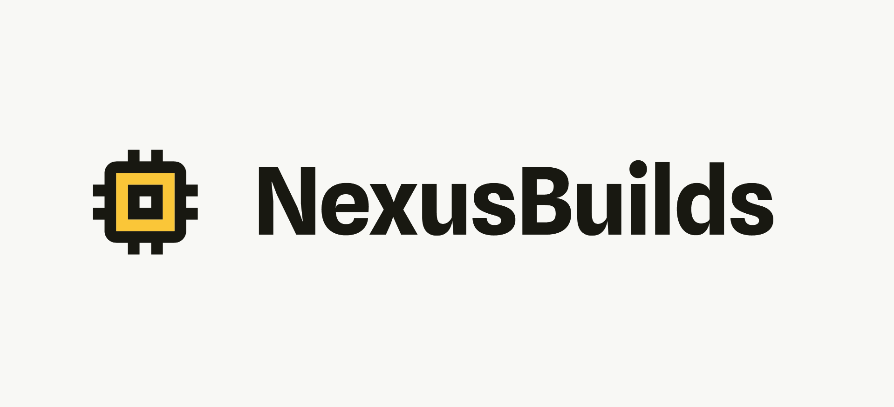

Digital Service Design
NexusBuilds PC Building Service
- Role
- Product Designer
- Timeline
- Feb 2026
- Client
- Personal
- Tools
- Figma, Stitch, Antigravity
A PC building service for everyone
The NexusBuilds PC Building Service is a service aimed towards streamlining the PC building process for both clients and builders. It incorporates a unique, communication-focused approach to PC building, where clients of varying experience can express their needs and preferences to builders in a detailed and organized manner, turning consulting into an optional process for builders.
Almost everyone will need a PC nowadays, with a growing number of people interested in a custom-built PC rather than the default store-bought counterpart. However, the process of building a PC can be too challenging for beginners, while those with more experience often have specific wants but lack the time or resources to build a PC on their own. NexusBuilds acknowledges both audiences, offering a seamless and personalized PC building experience for everyone.
Credit: Unsplash, Pexels (stock images, used under the Unsplash and Pexels licenses)
Live site
*This is the working website. Open in new tab for a better experience.
PROBLEM STATEMENT
The audience in need of a PC tailored to their workflow is diverse, forcing builders to accommodate as many people as possible.
How might we make the process of obtaining a custom PC more accessible to consumers without increasing the burden of communication for builders?
Research
- 24Participants
- 3Experience levels
- 6Use cases
- 18Testing sessions